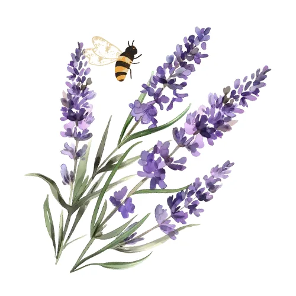

Sincerely Foundation
Some work cannot be sustained by commerce alone. The Foundation exists to protect and extend the work of Sincerely beyond what any one person, book or business can achieve.

What the Foundation supports
Scholarships and research are its first proposed fields of public-benefit support. Governance and funding are being designed now.
Research
Continued development of the Sincerely Human frameworks, and inquiry that bridges practitioner wisdom with scholarly rigour.
Scholarships and access
Pathways for communities, leaders and institutions that could not otherwise take part in retreats, learning and gatherings.
Publishing
Books, papers and resources that make the work accessible, with decisions driven by impact instead of market pressure.
Built for decades, not quarters
The Foundation makes sure the integrity of this work is never compromised by commercial pressure, and that depth is never traded for scale.
Independence
Funding decisions follow the mission, not donor preference. The work leads and resources follow.
Transparency
How funds are used is reported clearly and regularly, so contributors can see what their generosity serves.
Integration
Research informs the Show. Publishing extends the books. Access widens the gatherings.
Patience
This is generational work, and the Foundation is how it is stewarded.
Follow the Foundation as it takes shape
A portion of proceeds from signed copies of Sincerely, Katherine. already supports it. Leave your email to hear when scholarships and research funding open.